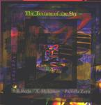

| Artist: | Discord Aggregate |
| Title: | The Texture Of The Sky |
| Label: | self produced |
| Length(s): | minutes |
| Year(s) of release: | 2000 |
| Month of review: | [11/2001] |
| 1) | The Carrier Of Time | 2.23 |
| 2) | The Custom - Reprise | 0.48 |
| 3) | Zabda Rect | 1.18 |
| 4) | The Carrier Of Time | 1.43 |
| 5) | The Center | 2.18 |
| 6) | Island | 3.07 |
| 7) | The Custom | 2.11 |
| 8) | The Custom - Reprise | 0.54 |
| 9) | The Center | 1.26 |
| 10) | The Custom | 2.09 |
| 11) | The Center | 1.51 |
| 12) | Island | 2.17 |
| 13) | The Custom | 2.21 |
| 14) | Island | 1.49 |
| 15) | The Center | 3.24 |
| 16) | The Custom | 2.05 |
| 17) | The Center | 2.46 |
| 18) | Zabda Rect | 2.39 |
| 19) | The Carrier Of Time | 2.39 |
| 20) | Island | 1.39 |
| 21) | The Center | 3.18 |
| 22) | Island | 1.31 |
| 23) | The Custom - Reprise | 0.50 |
| 24) | The Center | 1.20 |
| 25) | The Custom | 4.12 |
| 26) | The Custom - Reprise | 0.55 |
| 27) | The Center | 1.05 |
| 28) | Island | 1.45 |
| 29) | The Carrier Of Time | 0.33 |
| 30) | The Center | 1.41 |
| 31) | The Message | 2.58 |
This nicely packaged item is the follow-up to the Attack Of The Absolute Zeroes which was a kind of musical type thing. There is also an interactive novel called the Texture Of The Sky on which this musical trip was based.
The Carrier Of Time is a piece in which string instrumentation and high female vocals figure for the most part. There is also some talking and explaining going on. The music is mostly repetitive and might be described as neo-classical and is rather sparse. The idea behind the track is to play each subsequent note with a different instrument giving the whole a rather nervous character. All parts are quite similar in style (to my ears).
The Custom - Reprise has throaty vocals in the style of Tibetan monks with S.B. Reda speaking over this in a panicky voice. The song is about going through customs while having nothing to hide (but do you? Incertainty creeps in). The track is quite short on the whole.
Zabda Rect (at first I thought they were saying Subdirect all the time) combines a number of vocal styles and intonations. There is not any music as such here, just the vocals.
The Center is a scary piece of work and also one of the major ones on this album. Eerie female ahhhs, lots of percussion, with monstrous vocals, more eerie female vocalizations and also some repetitive sparse violin sounds, dissonant keyboards and sound effects such as the creaking of wood (it sounds like that). During the keyboard parts Lustmord came to mind. The song ends with a vacuumcleaning siren going off.
Island is the next one. It is the sung counterpart of Zabda Rect. This means weird vocalizations and vibrato's. The improvised vocals are mixed and yield an eerie choir. The Zabda of Zabda Rect returns here. As it is explained in the "booklet" this track is a companion of Zabda Rect. Towards the end the patterns become more intricate, more is going on at the same time. Generally three different types of vocals are used: the rather ordinary clear vocals of Pamela Zero, and some high pitched vibrating vocals and thirdly low vibrating waahooh vocals.
Custom has the Middle Eastern styled vocals of Pamela Zero. She really has a very flexible voice. It is surprising that she manages to hold in this talent for the most part of this cd. You might compare her vocal style with that of Joan Osborne, but Pamela reaches quite a bit higher. The music is quite percussive and because of the vocals we get a kind of recitational melodic world music. Later parts are more free form, but with the vocal style thoroughly Indian/Eastern, but also with screams and howls. The third part finds us without the screams, but with the more sensible vocals of Zero. This is quite beautiful and more "music" like than anything on the album. The next part is again more free form. The vocals of Zero remind me of a large collection of buzzing insects. Part five is the conclusion and is also the longest track on the album.
Now how does this all work out when split up among each other? Quite well in fact. It is a bit like reading story that jumps from one place/time to another and thereby builds up tension and yields a kind of variation. When listening to the tracks themselves the music is easier to follow, but the lack of variation within the tracks makes the album less interesting.
The final track on the album is only a single part for a song. The Message features warped vocals, in a message from the Sky.